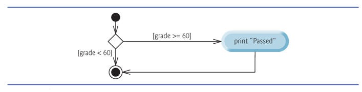
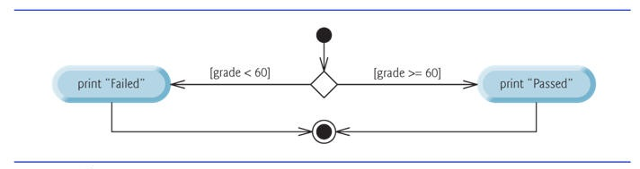
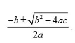

To gain experience with:
Three types of selection statements.
if statement.
if…else statement:.
switch statement:.
if Single-Selection Statement.

|
Pseudocode:
If student’s grade is greater than or equal to 60 |
Java Code:
if
( studentGrade >=
60
) |
| If the condition is false, the Print statement is ignored, and the next pseudocode statement in order is performed. | |
if Single-Selection Statement.

|
Pseudocode:
If student’s grade is greater than or equal to 60 |
Java Code:
if
( grade >=
60
) |
| Note that the body of the else is also indented. | |
Conditional operator (?:)—shorthand if…else.
Ternary operator (takes three operands)
boolean expression ? the value if the boolean expression is true : the value if the boolean expression evaluates to false
System.out.println(studentGrade >= 60 ? "Passed" : "Failed" );
Example 1:
import java.util.Scanner;
public class Tester
{
public static void main(String [] args)
{
int score ;
char grade;
Scanner input = new Scanner(System.in);
System.out.println("Enter your score");
score = input.nextInt();
if (score >=90)
grade = 'A';
else if (score >=80)
grade = 'B';
else if (score >=70)
grade = 'C';
else if (score >=60)
grade = 'D';
else
grade = 'F';
System.out.println("Your test score is "+ score
+ ", which is equivalent to the grade " + grade + ".");
}
}
|
import java.util.Scanner;
public class Tester
{
public static void main(String [] args)
{
int score ;
char grade;
Scanner input = new Scanner(System.in);
System.out.println("Enter your score");
score = input.nextInt();
if (score >=90)
grade = 'A';
if (score >=80)
grade = 'B';
if (score >=70)
grade = 'C';
if (score >=60)
grade = 'D';
else
grade = 'F';
System.out.println("Your test score is "+ score
+ ", which is equivalent to the grade " + grade + ".");
}
}
|
| Study, run, compile and run the above codes and observe the output |
Click for nested if statements
Three repetition statements (also called looping statements)Perform statements repeatedly while a loop-continuation condition remains true.
while and for statements perform the action(s) in their bodies zero or more times. if the loop-continuation condition is initially false, the body will not execute
The do…while statement performs the action(s) in its body one or more times
|
1.
(a) Write an application that will prompt user the to enter the first term, common difference, and the number of terms of an arithmetic progression (AP). It should compute the nth term of the series and the sum of the first n terms. Your code should ensure that the number of terms, n, is positive: [Hint: use Tn=a +(n– 1)d, and Sn = (n/2)(a+Tn), wherea is the first term,n is the number of terms,d is the common difference,Tn is thenth term of the series, andSn is the sum of the firstn terms.] |
|
2.
A quadratic equation of the form  has roots: (a) Write a program that efficiently determines the values of the roots (root1 and root2) of the given equation. Assume that all the variables have been declared as type double. Note that the roots are real and distinct, real and equal, or complex according to whether the discriminant (b2 – 4ac) is positive, zero or negative, respectively. ; Format the output in the following ways (where root1 and root2 are the calculated roots of the equation). The roots are real and distinct :root1,root2The roots are real and equal:root1 The roots are complex (b) Re-write the example 1 above using switch statement |
|
3.
Write a program using the followiing pseudocode:
(a) 1 Set total to zero 2 set grade counter to one 3 4 While grade counter is less than or equal to zero 5 Prompt the user to enter the next grade 6 Input the next grade 7 Add the grade into the total 8 Add one to the grade counter 9 10 Set the class avaerage to the total divided by ten 11 Print the class avarage
(b) 1 Initialize total to zero 2 Initialize counter to zero 3 4 Prompt the user to enter the first grade 5 Input the first grade (possibly the sentinel) 6 7 While the user has not yet entered the sentinel 8 Add this grade into the running total 9 Add one to the grade counter 10 Prompt user to enter the next grade 11 Input the next grade (Possibly the sentinal) 12 13 If the counter is not equal to zero 14 Set the average to the total divided by the counter 15 Print the average 16 else 17 Print "No grades were entered!"
(c) 1 Initialize passes to zero 2 Initialize failures to zero 3 Initialize student counter to one 4 5 While student counter is less than or equal to 10 6 Prompt the user to enter the exam result 7 Input the next exam result 8 9 If the student passed 10 Add one to passes 11 Else 12 Add one to failures 13 14 Add one to student counter 15 16 Print the number of passes 17 Print the number of failures 18 19 If more than eight students passed 20 Print "Execellent to instructor" |
1.
The value of an investment of P naira after t years at an interest rate ofr% compounded yearly is given by P(1 +r/100)t.
Write a program that will ask the user to input P,t and r, and will calculate and display the value of the investment.
This should be done in asentinel-controlled loop so that many such calculations can be performed.
2.
The first term of aGP is 1.5, and its common ratio is 2. Write a program that will calculate the sum of ten terms. Do not use a formula.
Very important guidelines: